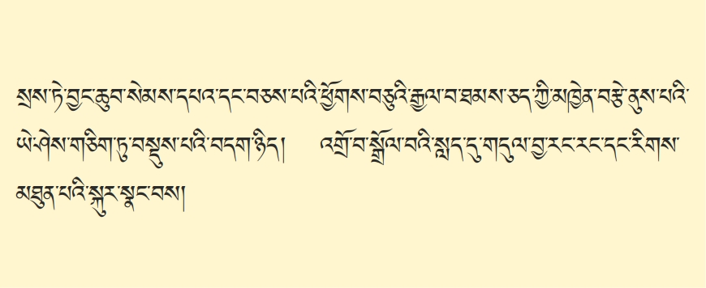
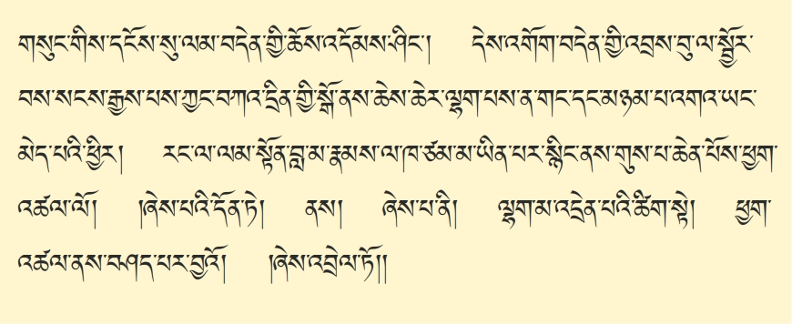

་་་༺རྗེ་བཙུན་བླ་མ་རྣམས་དང་། མདོ་རྒྱུད་མན་ངག་རབ་ཏུ་དྲི་མ་མེད་པ་༻རྣམས་ལ་སྒོ་གསུམ་གུས་པ་ཆེན་པོས་ལུས་རབ་ཏུ་གུས་པས་ཕྱག་འཚལ་ཞིང་སྐྱབས་སུ་མཆིའོ། བྱིན་གྱིས་བརླབ་པར་མཛད་དུ་གསོལ། གང་གི་ཞལ་བཟང་ལྟ་བས་མི་ངོམས་གེ་སར་འཛུམ་པའི་མདངས་བཀྲ་ཞིང༌། །མཚན་དཔེའི་གཟི་འོད་ཟེའུ་འབྲུ་གསལ་བས་འགྲོ་ཀུན་མིག་གི་བདུད་རྩིར་གྱུར། །ཐུགས་རྗེའི་འདབ་མ་ཀུན་ནས་དཀྱུས་རིང་འཇིག་རྟེན་གསུམ་གྱི་ཁོངས་ཁྱབ་པའི། །ཐུབ་དབང་པདྨ་དཀར་པོའི་ཞབས་པད་དེ་རིང་བདག་བློའི་ཡིད་མཚོར་སྐྱོངས། །ཨོ་རྒྱན་མཚོ་གླིང་པདྨའི་སྡོང་པོ་ལ། རྒྱལ་བའི་རྣམ་འཕྲུལ་རང་བཞིན་ལྷུན་གྱིས་གྲུབ། མཚན་རྫོགས་དཔེ་བྱད་ཡོན་ཏན་ཚོགས་འབར་བའི། །པདྨ་འབྱུང་གནས་བདག་བློའི་པད་མཚོར་རོལ། །སྔ་འགྱུར་བཀའ་གཏེར་བཀའ་གདམས་ལམ་འབྲས་དང་། །མར་ཤངས་བཀའ་བརྒྱུད་ཞི་གཅོད་སྦྱོར་བ་དྲུག །ཨོ་རྒྱན་བསྙེན་སྒྲུབ་ཟབ་མོའི་ཆོས་དྲུག་སོགས། །སྒྲུབ་བརྒྱུད་ཤིང་རྟ་བརྒྱད་ལ་གུས་ཕྱག་འཚལ། །རྒྱལ་ཀུན་ཡེ་ཤེས་སྐུ་ཅན་འཇམ་དཔལ་དབྱངས། །མཚུངས་མེད་ཚད་ལས་འདས་པའི༺་་་་། འཁྲུལ་ཞིག་གྲུབ་པ་དབང་པོ་རྡོ་རྗེ་འཛིན༻། །གཙུག་ལག་སྨྲ་བའི་ཉི་མར་གསོལ་བ་འདེབས། །བཀའ་བབས་བདུན་ལྡན་འཇམ་དབྱངས་མཁྱེན་བརྩེའི་གཏེར། །འཇམ་མགོན་ཀོང་སྤྲུལ་བློ་གྲོས་མཐའ་ཡས་ཞབས། །ཟབ་གཏེར་༺གསང་སྔགས་༻རྩོལ་མཛད་མཆོག་གྱུར་གླིང་། །བསྟན་པའི་སྒྲོན་མེ་གསུམ་ལ་གསོལ་བ་འདེབས། །འཇམ་པའི་དཔལ་གྱུར་མི་ཕམ་རྣམ་པར་རྒྱལ། །དཀྱིལ་འཁོར་ཀུན་གྱི་ཁྱབ་བདག་བི་ཛ་ཡ། །འོད་གསལ་རྡོ་རྗེ་ཆོས་ཀྱི་བློ་གྲོས་ཚུལ། །བཀའ་དྲིན་མཉམ་མེད་གསུམ་ལ་གསོལ་བ་འདེབས། །སྤྱི་དང་འདྲེན་དང་དབང་བསྐུར་ཉམས་ཆག་སྦྱངས། །མན་ངག་སྟོན࿏་དང࿏་ཤེས་རྒྱུད་འགྲོལ་མཛད་པའི། །རྩ་བའི་བླ་མ་རྣམས་ལ་གསོལ་བ་འདེབས། །ཐུགས་ཡིད་གཅིག་ཏུ་འདྲེས་པར་བྱིན་གྱིས་རློབས། །ཡོན་ཏན་རང་བཞིན་བདེ་ལེགས་ཕུན་སུམ་ཚོགས། །བཀྲ་ཤིས་མཆོག་གི་ལྷ་ཡི་ལྷར་གྱུར་པ། ཐུགས་རྗེའི་རང་བཞིན་ཕན་བདེའི་སྤྲིན་ཚོགས་ཅན། །དཔལ་མགོན་བླ་མའི་ཚོགས་ལ་གུས་ཕྱག་འཚལ། །གང་ཞིག་གསེར་མཆོག་རང་བཞིན་རི་རབ་ལ་གནས་མནྡྷ་ར་དང་ལྷར་བཅས་གནོད་སྦྱིན་དང་། གདེངས་ཀ་ནོར་བུའི་འོད་ཀྱིས་མུན࿏་པ࿏་སེལ࿏་མཛད࿏་ས་འོག་གནས་པའི་ཀླུ་རྣམས་གང་ཡིན་དང་། གངས་ཅན་རིར་ནི་དཔལ་གྱིས་རོལ་ཞིང་རབ་ཏུ་དགའ་བའི་རིག་པ་འཛིན་པ་གང་ཡིན࿏་དང࿏་ དེ་དག་ཐམས་ཅད་ཐར་པ་དམ་པའི་སྒོར་གྱུར་ཐུབ་པའི་གསུང་མཉན་ཕྱིར་ནི་འདིར་གཤེགས་ཤིག །ལྷ་ཡི་སྐད་དང་ཀླུ་དང་གནོད་སྦྱིན་སྐད། །གྲུལ་བུམ་དག་དང་མི་ཡི་སྐད་རྣམས་དང་། །འགྲོ་བ་ཀུན་གྱི་སྒྲ་སྐད࿏་ཇི་ཙམ་པར༑ །ཐམས་ཅད་སྐད་དུ་བདག་གིས་ཆོས་བསྟན་ཏོ། །འདི་ལྟར། ༺སྟོང་སྙམ། སྟོང་ཉིད་༻ཀྱིས་གར་ཁྱབ་སེམས་ཅན་གྱིས་ཁྱབ། སེམས་ཅན་གྱིས་གར་ཁྱབ་ཐམས་ཅད་ལས་ཉོན་སྡུག་བསྔལ་གྱིས་ཁྱབ། ལས་ཉོན་སྡུག་བསྔལ་གྱིས་ཁྱབ་པའི་སེམས་ཅན་དེ་དག་ཐམས་ཅད། འོ་ཅག࿏་རྣམས་ཀྱི་ཕ་དང་མར་མ་གྱུར་པ་གཅིག་ཀྱང་མེད་པས། ཕ་མ་བྱེད་པའི་དུས་སུ། ད་ལྟ་རྩ་བའི་ཕ་མ་བཞིན། ཟས་ཀྱི་ཕུད་བྱིན། གོས་ཀྱི་རྩེ་གཡོགས། ཤིན་ཏུ་བྱམས་པའི་སེམས་ཀྱིས་བསྐྱེད་བསྲིངས་བའི་དྲིན་ཆེན་ཤ་སྟག་ཏུ་གྱུར་བ་ཡིན། དེ་ཐམས་ཅད་འདོད་པ་བདེ་བ་འདོད་ཀྱང་། བདེ་བའི་རྒྱུ་ཡང་དག་པའི་ཆོས་ནི་སྒྲུབ་མི་ཤེས། འདོད་པ་སྡུག་བསྔལ་མི་འདོད་ཀྱང་། སྡིག་པ་མི་དགེ་བ་འབའ་ཞིག་ལ་སྤྱོད་པས། ཞེ་འདོད་དང་ལག་ལེན་ཕྱིན་ཅི་ལོག་ཏུ་སོང࿏་ནས࿏། ༺རྨི་ལམ་མཚུངས་པ། མ་སོགས་གྱུར་བ་༻སེམས་ཅན་དེ་དག་ཐམས་ཅད࿏། མི་ལུས་རིན་པོ་ཆེ་ཐོབ། མཚན་ཉིད་དང་ལྡན་པའི་བླ་མ་དགེ་བའི་བཤེས་གཉེན་གྱིས་རྗེས་སུ་བཟུང་། བླ་མའི་གདམས་པ་ཚུལ་བཞིན་དུ་ཐོབ་པའི་སྐབས་འདིར། ལུང་མ་བསྟན་༺ལས་དང་། གཏན་བདེ་གཉིས་༻ཀྱི་སོ་མཚམས་སུ། སླེབས་པ་ཡིན་པས། འཛིན་པ་༺གཏད་མེད་༻ཀྱི་སྒོ་ནས། ལུས་རྟེན་དེ་ཉིད་༺ཅི་བརྟེན་ནས།༻ ཐོབ་པ་པོར་༺ཅུང་༻དམ་པའི་ཆོས་ཡང་དག་པ་ཞིག་བསྒྲུབ་པར་བྱ། སྒྲུབ་པ་དེ་ཡང་། རང་ཉིད་གཅིག་པུའི་དོན་ནི་མ་ཡིན་པ། ནམ་མཁའ་དང་མཉམ་པའི་སེམས་ཅན་ཐམས་ཅད་རྣམ་མཁྱེན་གཏན་བདེའི་ས་ལ་འགོད་པར་ནུས࿏་པ། འཕགས་པ་འཇམ་དཔལ་དབྱངས་དང་། བྱང་ཆུབ་སེམས་དཔའ་སྤྱན་རས་གཟིགས་ལ་སོགས་པའི་སྤྱོད་པ་རྒྱ་མཚོ་ལྟ་བུ་ལ་བསླབ་པར་བགྱིའོ་སྙམ་པ་བསམ་པ་རྒྱ་ཆེ་བ་བྱང་ཆུབ་མཆོག་ཏུ་ཐུགས་བསྐྱེད་པ་དང་། ཆོས་གསན་པའི་ཀུན་ཏུ་སྤྱོད་པ་མདོ་རྒྱུད་བསྟན་བཅོས་དྲི་མ་མེད་པ་རྣམས་ནས་ཇི་སྐད་གསུངས་པ་བཞིན་དུ་ལེགས་པར་གསལ་བཏབ་ཏེ་གསན་པར་གནང་བར་ཞུ།
གང་གསན་བྱའི་ཆོས་ཀྱི་རིམ་པ་དེ་ལ། དེ་ནས། སྤོང་བ་བསམ་གཏན་པ་ལ་གདམས་པའི་གཏམ་ལམ་རིམ་བདུད་རྩི་སྙིང་པོ་ཞེས་བྱ་བ། ཐམས་ཅད་མཁྱེན་པ་འཇམ་དབྱངས་མཁྱེན་བརྩེ་དབང་པོས་མཛད་པར་གྱུར་བ་དེ་ཉིད་ཀྱི་འགྲེལ་བ་ཚིག་དོན་རབ་གསལ་ཞེས་བྱ་བ་རྩ་འགྲེལ་སྦྲགས་ཏེ་འབུལ་བར་བྱེད་པ་དེ་ལ། སྤྱིར་བདེ་བཞིན་གཤེགས་པ་རྫོགས་པའི་སངས་རྒྱས་ཀྱི་ལུང་དང་རྟོགས་པའི་བསྟན་པ་དེ་ཉིད་ཚུལ་བཞིན་དུ་འཛིན་པར་བྱེད་པ་ལ། ཀློག་པ་ཐོས་བསམ་དང་། སྤོང་བ་བསམ་གཏན་གྱི་སྡེ་གཉིས་སུ་ཡོད་པ་ལས། སྐབས་སུ་བབས་པ་དེ། སྙིགས་མ་ལྔའི࿏་དུས་ཀྱི་སེམས་ཅན་ཐམས་ཅད་ཚེ་ཐུང་། བློ་གྲོས་དབུལ། ཤེས་བྱ་རྒྱ་ཆེན་པོ་ལ་བསམ་པ་མི་ནུས་པའི࿏་གང་ཟག་ཐམས་ཅད་ཆོས་ཀྱི་གནད་༺འགེངས་པོ་༻གཅིག་ཏུ་བསྡུས་ཏེ་ཉམས་སུ་ལེན་ནས། སྤོང་བ་བསམ་གཏན་གྱི་ཏིང་ངེ་འཛིན་ལ་མཉམ་པར་བཞག་ན་ཁེ་ཆེ་བ་ཡིན་པས། དེ་དག་ལ་ཕན་པར་བྱེད་པའི་གདམས་པའི་གཏམ་སྐྱེས་བུ་གསུམ་གྱི་ལམ་གྱི་རིམ་པ་ཐམས་ཅད་མདོར་བསྡུས་པ་བདུད་རྩི་སྙིང་པོ་ཞེས་བྱ་བ་དེ་ནི། སླར་ཡང་འགྲེལ་བའི་སྒོ་ནས་གསལ་བར་མཛད་པ་འདི་ཉིད་འཆད་པའི་སྐབས་སུ་བབས་པ་ཡིན་ལ།

དེ་ལ། དེ་ག་འགྲེལ་བ་གྱི་མཆོད་པར་བརྗོད་པ་ནི། ན་མོ་གུ་རུ་བྷྱཿདཀྱིལ་འཁོར་རྒྱ་མཚོའི་ཁྱབ་བདག་མཆོག ། དཔལ་ལྡན་བླ་མར་གུས་བཏུད་ནས། ། རང་གིས་ཇི་ལྟར་གདམས་པའི་དོན། ། སླར་ཡང་སྙིང་པོར་དྲིལ་ཏེ་དབྱེ། །ཞེས་པ་སྟེ། བླ་མ་སངས་རྒྱས་བླ་མ་ཆོས། །དེ་བཞིན་བླ་མ་དགེ་འདུན་ཏེ། །ཀུན་གྱི་བྱེད་པོ་བླ་མ་ཡིན། །བླ་མ་དཔལ་ལྡན་རྡོ་རྗེ་འཆང་། །ཞེས་གསུངས་པ་ལྟར་ཕྱོགས་བཅུ་དུས་གསུམ་གྱི་བདེ་བཞིན་གཤེགས་པ་ཐམས་ཅད་ཀྱི་ཡེ་ཤེས་གཅིག་ཏུ་བསྡུས་པའི་བདག་ཉིད། དཔལ་མགོན་བླ་མ་དབྱེར་མི་ཕྱེད་མི་གསལ་ཅན། སངས་རྒྱས་ཀྱི་ཞལ་མཐོང་བ་དང་། ཆོས་ཀྱི་བདུད་རྩི་སྤྱོད་པ་ལ་སྐལ་པ་དམན་པ་ཐམས་ཅད་ལ། དགེ་བའི་བཤེས་གཉེན་གྱི࿏་གཟུགས་སུ་སྤྲུལ་ནས། སངས་རྒྱས་དང་བྱང་ཆུབ་སེམས་དཔའ་ཐམས་ཅད་ཀྱིས་སྐྱེ་འགྲོ་ཐམས་ཅད་ཐར་པའི་ལམ་དུ་བཀོད་པ་ལུང་བསྟན་པ་ལྟ་བུ། དེ་ནས࿏། བླ་མའི་ཚུལ་དུ་བྱོན་པ། མཚན་ཉིད་དང་ལྡན་པའི་བླ་མ་དགེ་བའི་བཤེས་གཉེན་དེ་ནི། དེ་ནས࿏། ཕྱི་ལྟར་དུ་བྱས་ན། དཀོན་མཆོག་གསུམ་ཀུན་འདུས། ནང་ལྟར་དུ་རྩ་གསུམ་ཀུན་འདུས། གསང་བ་ལྟར་དུ་སྐུ་གསུམ་ཀུན་འདུས་ཀྱི་བདག་ཉིད། རིགས་དང་དཀྱིལ་འཁོར་མ་ལུས་པ་ཐམས་ཅད། ཕར་འཕྲོ་བ་དང་། ཚུར་བསྡུ་བ། བླ་མའི་ཐུགས་བདེ་སྟོང་ཡེ་ཤེས་ཆེན་པོའི་རོལ་པ་གཅིག་ཉིད࿏། གཞན་དུ་མ་ཡིན་པ་ཡིན་པའི་ཆ་ནས། དེ་ནས࿏། དཀྱིལ་འཁོར་རྒྱ་མཚོའི་ཁྱབ་བདག་དེ། འདི་ལྟ་བུའི་དཔལ་ལྡན་བླ་མ་དེ་ཉིད་ལ། དཔལ་དང་ལྡན། ཞེས་པ་༺འདི་ཉིད་༻དེ། དབང་ཕུན་སུམ་ཚོགས་པ་དང་རྟོགས་པ࿏་ཕུན་སུམ་ཚོགས་པའི་ཡོན་ཏན་ཕུན་སུམ་ཚོགས་པ་དང་ལྡན་པས། ངེས་པའི་དོན་དུ་ཡོན་ཏན་ཐམས་ཅད་རྒྱལ་བ་སྲས་དང་བཅས་པ་དང་ཁྱད་པར་མེད་པ། ཟག་པ་མེད་པའི་འབྲས་བུའི་ཡོན་ཏན་ཐམས་ཅད་ཡོངས་སུ་རྫོགས་པ། བཀའ་དྲིན་གྱི་ངོས་ནས་བྱས་ན་སངས་རྒྱས་ལས་ཀྱང་བླ་མར་ཆེ་བ་ཡིན་པ་དེ་ལ། གུས་པས་འདུད་པར་བྱས་ན། གཞན་ཐམས་ཅད་ལའང་མཆོག་གི་མཆོད་པར་གྱུར་བ་ཡིན་པས་དེ་ལ་གུས་བཏུད་ནས། དེ་ནས࿏། སྔར། རྩ་བའི་ས་བཅད། ལམ་རིམ་བདུད་རྩི་སྙིང་པོ་ཞེས་བྱ་བ་དེ་ཉིད་སྐུལ་བ་པོས་བསྐུལ་ཏེ། དེ་ནས࿏། མཁྱེན་བརྩེ་དབང་པོ་རང་ཉིད་ཀྱིས་ཇི་ལྟར་མཛད་བཞིན་གདམས་པའི་དོན་ཉིད་སླར་ཡང་དེ། ཚིག་དང་དོན་སྙིང་པོར་དྲིལ་ཏེ་འགྲེལ་བ་ཆུང་ངུའི་ཚུལ་གྱིས་དབྱེ་བར་བྱའོ། ཞེས་མཆོད་པར་བརྗོད་པ་དང་བརྩམ་པར་དམ་བཅའ་བའོ།

དེ་ནས་བསྟན་བཅོས་འདི་ལ་གསུམ་སྟེ། རྩོམ་པ་ལ་འཇུག་པ་ཀླད་ཀྱི་དོན། བརྩམ་པར་བྱ་བ་གཞུང་གི་དོན། རྩོམ་པར་མཐར་ཕྱིན་པ་མཇུག་གི་དོན་དང་རྣམ་པ་གསུམ་དུ་ཡོད་པ་ལས། དང་པོ་བསྟན་བཅོས་རྩོམ་པ་ལ་འཇུག་པའི་ཐོག་མར་དགེ་བ་ཀླད་ཀྱི་དོན་བཤད་པ་ལ་གཉིས་ཏེ། མཆོད་པར་བརྗོད་པ་དང་། རྩོམ་པར་དམ་བཅའ་བ་གཉིས་སུ་ཡོད་པའི་ནང་ནས། དང་པོ་མཆོད་པར་བརྗོད་པ་དེ་ཉིད་རེད་དུས། སྲས་བཅས་རྒྱལ་བའི་ཡེ་ཤེས་སྐུ། །བཀའ་དྲིན་མཉམ་མེད་བླ་མ་ལ། །ཞེས་ལ࿏་སོགས་པས࿏་མཆོད་པར་མཛད་པ་སྟེ།
དེ་ཡང་། སྲས་ཟེར་དུས་བདེ་བཞིན་གཤེགས་པ་རྫོགས་པའི་སངས་རྒྱས་བཅོམ་ལྡན་འདས་དཔལ་མཉམ་མེད་ཤཱཀྱའི་རྒྱལ་པོ་ལྟ་བུ་ཞིག་ཡིན་ན། སྐུ་ཡི་སྲས་དགྲ་ཅན་འཛིན། གསུང་གི་སྲས་ཉན་རང་འཕགས་པའི་ཚོགས་ཐམས་ཅད་དང་། ཐུགས་ཀྱི་སྲས་བྱང་ཆུབ་སེམས་དཔའ་ཡིན་པ། དེ་ནས࿏། སྲས་ཐམས་ཅད་ཀྱི་ནས་ནས་མཆོག་ཏུ་གྱུར་བ་གང་ཡིན་ན། སངས་རྒྱས་ཀྱི་གདུང་འཛིན་ཞིང࿏་། དཀོན་མཆོག་གསུམ་གྱི་མཛད་པ་འཕྲིན་ལས་རྒྱུན་མི་ཆད་པ་དང་། ཐེག་པ་ཆེན་པོའི་སྤྱོད་པ་རྒྱ་མཚོ་ལྟ་བུའི་སངས་རྒྱས་ཀྱི་མཛད་པ་ལ་སློབ་པར་བྱེད་པའི་སྲས་ཀྱི་མཆོག་ཏུ་གྱུར་བ་ནི་བྱང་ཆུབ་སེམས་དཔའ་རྣམས་ཡིན་ལ། དེ་ལྟ་བུའི་བྱང་ཆུབ་སེམས་དཔའ་དེ་དང་བཅས་པ་སྟེ། ཕྱོགས་བཅུའི་ཞིང་ཁམས་རབ་འབྱམས་ན་རྒྱལ་བ་ཐམས་ཅད། རྡུལ་གཅིག་གི་སྟེང་ན་རྡུལ་རྙེད་ལྟར་དུ་བཞུགས་ཡོད་པ་དེ་དག࿏། སྲས་དང་བཅས་པ་ཐམས་ཅད་ཀྱི་ཐུགས། ཇི་ལྟ་ཇི་བཞིན་མཁྱེན་པའི་ཡེ་ཤེས་དང་། མཁའ་ཁྱབ་ཀྱི་འགྲོ་བ་ཐམས་ཅད་ལ། དམིགས་མེད་བརྩེ་བའི་ཐུགས་རྗེ་ཆེན་པོ་དང་། སེམས་ཅན་ཐམས་ཅད་ཀྱི་དོན་ལ། ཐར་པའི་ལམ་དུ་སྐུལ་པར་འགྱུར་བ་དེ་ལ། དེ་བཞིན་གཤེགས་པ་ནི། སྟོབས་བཅུ། ༺དབང་བཅུ།༻མི་འཇིགས་པ་བཞི་ལ་མངའ་རྙེད་པས་ན། ༼སེམས་ཅན་གྱི་༽ སངས་རྒྱས་ཀྱིས་སེམས་ཅན་གྱི་དོན་མཛད་པ་ལྟ་བུ་སུས་ཀྱང་མི་ནུས་པས། ནུས་པ་ཕུལ་དུ་ཕྱིན་པ་ཡིན། དེ་ལྟ་བུའི་མཁྱེན་བརྩེ་ནུས་གསུམ་གྱི་ཡེ་ཤེས་འདི་ཉིད་གཅིག་ཏུ་བསྡུས་པའི་གོང་བུ་ལྟ་བུ་གང་རེད་ཟེར་ན། དེ། ཕྱོགས་བཅུ་རྒྱལ་བ་སྲས་དང་བཅས་པའི࿏་དོན་དམ་ཡེ་ཤེས་ཆོས་ཀྱི་སྐུ་བསམ་གྱིས་མི་ཁྱབ་པའི་ངོ་བོ། དེ་ཡང་། ཆོས་ཀྱི་སྐུ། དེ་བཞིན་རང་ངོས་ན། ཁམས་གསུམ་འཁོར་བའི་ས་བོན་དྲུང་ནས་སྤོང་ཟིན་པ་ཡིན་ན་ཡང་། ཆོས་ཀྱི་སྐུ་ཡི། དེ་ཡང་། དམིགས་མེད་ཐུགས་རྗེ་ཆེན་པོ། གདུལ་བྱ་༺མི་འདྲ་བ་༻གྱིས། ཆེད་དུ་མཐོང་བར་གྱུར་བ་ཡིན་པའི་ཕྱིར་ན། དུས་ངན་སྙིགས་མ་ལྔ། སེམས་ཅན་རྣམས་ཉོན་མོངས་པ་ཇི་ཙམ་རགས། བློ་གྲོས་ཇི་ཙམ་༺དཀའ།༻བློ་རྒྱུད་ཆོས་ལས་ཇི་ཙམ་དུ་འགྲོ་དཀའ་ན། སངས་རྒྱས་ཀྱི་ཐུགས་རྗེ་དང་འཕྲིན་ལས་དེ་ཙམ་གྱིས་མྱུར་དུ་གདུལ་བྱའི་ཡུལ་ལ་ལྷག་པར་མཛད་པ་ཆོས་ཉིད་རེད་དུས། དེ་ནས࿏། འགྲོ་བ་སེམས་ཅན་རྣམས་ཐམས་ཅད་ཐར་པའི་ལམ་དུ། འགྲོ་བར་བྱ་བའི་ཕྱིར་དུ། དགེ་བའི་བཤེས་གཉེན་དང་ཁྱིམ་པ་དང་། ཐ་ན་བྱ་དང་རིག་དྭགས་དང་། དེ་ནས࿏། དག་པའི་བྱང་ཆུབ་སེམས་དཔའ་རྣམས་ལ་ནམ་མཁའ་དང་། ཤིང་ལས་ཀྱང་ཆོས་ཀྱི་སྒྲ་རྒྱུན་མི་ཆད་པ་སྣང་བ་དེ་ལྟ་བུའི་རང་རང་གི་རིགས་དང་མཐུན་པའི་སྐུར་སྣང་བར་གྱུར་བས།
དེ་ཐམས་ཅད་ཀྱིས། ཆོས་བསྟན་པ་དེ་ཐམས་ཅད་མདོར་བསྡུ་ན། འགོག་པ་དང་ལམ་གྱི་བདེན་པ་གཉིས་སུ་བསྡུ་གི་རེད། དེ། ༼ལམ་༽ འགོག་པ་ཟེར་མཁན་འདི་གང་རེད་ཟེར་ན། སེམས་ཅན་ཐམས་ཅད་ཁམས་གསུམ་འཁོར་བར་འཁྱམ་བྱེད་ཀྱི་རྩ་བ་ས་བོན་ལྟ་བུ་འདི། གང་རེད་ཟེར་ན། ལས་དང་ཉོན་མོངས་པ་རེད་དུས། དེ་ནས࿏། ལས་ཉོན་གྱི་རྒྱུ། ཁམས་གསུམ་འཁོར་བའི་ས་བོན་འདི་ཕར࿏་སྤོང་ཟིན་པ་དེ་ལ࿏་འགོག་པ་ཟེར།